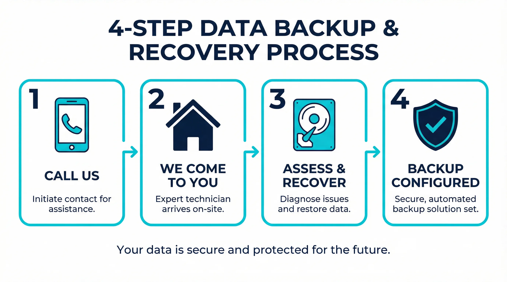
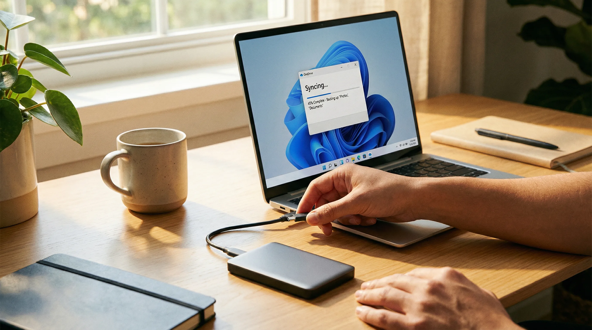

Lost files, a crashed hard drive or just want your data properly protected? We recover lost data and set up automatic backups at your Gold Coast home. No drop-off required — we come to you. Fast response available.
bcom ICT delivers secure data recovery and cloud backup services across the Gold Coast. We recover data from damaged drives and implement automated backup solutions to protect your critical files.
Whether you’ve lost important files or just want peace of mind knowing your data is safe, our Gold Coast technicians can help — at your home, without the need to drop anything off. This service is part of our broader computer repair Gold Coast offering. If your computer also has a hardware fault, we can assess it in the same visit.
We recover files from failed, corrupted, clicking or unrecognised hard drives and SSDs at your Gold Coast home — assessed honestly before any recovery work begins.
Accidentally deleted photos, documents or emails? We use specialist recovery tools to retrieve lost files from your Gold Coast computer wherever possible.
Unrecognised USB drives, damaged external hard drives and corrupted memory cards assessed and recovered at your Gold Coast home.
OneDrive, Google Drive or iCloud configured to automatically back up your files so they’re always protected — set up correctly at your Gold Coast home.
Automatic backup to an external hard drive set up and scheduled at your Gold Coast home — simple, reliable, no ongoing subscription needed.
Moving to a new PC or Mac? We transfer all your files, photos, documents and emails to your new device — nothing left behind.
When you choose bcom ICT, you are partnering with a Gold Coast local business that prioritises your needs over sales targets. We provide independent advice with no vendor commissions, ensuring the solutions we recommend are genuinely the best fit for your situation. We always provide a transparent, fixed-price quote before any work begins. With 7-day availability, we are here when you need us most.
No need to post your drive away or drop it at a shop. We come to your Gold Coast home — you keep your device in sight at all times.
When data is at risk, time matters. We aim to reach your Gold Coast home within 2–4 hours of your call. The earlier we assess a failed drive, the greater the chance of a full recovery.
We tell you what’s recoverable before we start — no false promises, no fees for work that isn’t possible.
We help Gold Coast businesses implement AI governance controls — restricting AI inputs, logging interactions, and ensuring AI tools operate within safe, auditable boundaries.
When you call about a data backup or recovery problem, the first thing we do is listen. You tell us what happened — whether the drive stopped being recognised, files disappeared after a Windows update, or you just want to make sure your photos and documents are properly protected going forward. We ask a few simple questions so we arrive at your Gold Coast home with the right tools and a clear idea of what we’re dealing with.
Once we’re there, we start with an honest assessment before any work begins. For data recovery, that means connecting the drive to our diagnostic equipment and checking what’s readable. We tell you what we can see, what we think is recoverable, and what the process involves — before we charge anything. A lot of people in Varsity Lakes, Robina and Southport have been told by other services that their drive is unrecoverable, only to find out later that the files were there all along. We don’t make promises we can’t keep, but we also don’t give up early.
For backup setups, we look at what you already have, what you’re trying to protect, and what will actually work for your household. Some people in Palm Beach or Helensvale want a simple external drive that backs up automatically every night. Others want cloud backup running alongside it so their files are safe even if the drive is lost or damaged. We set up whichever solution fits your situation, test it while we’re there, and show you how to check it’s working before we leave.
We don’t leave until the job is done. If we’re recovering files, you see them on screen before we pack up. If we’re setting up a backup, we run the first backup while we’re still at your home so you know it’s working. Call 07 3041 8993 to arrange a fast-turnaround visit.
Four straightforward steps — from your first call to a working backup or recovered files at your Gold Coast home.

The process starts with a phone call. You describe what’s happened — a failed drive, deleted files, a computer that won’t start, or just a request to get a proper backup running. We ask a few questions, give you an honest idea of what’s likely possible, and arrange a time to come to your home. Most Gold Coast call-outs happen the fast response or the next morning.
When we arrive, we bring the tools we need for the job. For data recovery, that includes specialist software and hardware adapters that let us read drives in different ways — including drives that your computer can no longer detect. For backup setups, we bring the knowledge to configure Windows Backup, OneDrive, Google Drive or a dedicated backup application, depending on what works best for you.
The assessment comes first. We check the drive, tell you what we can see, and explain what recovery is likely to involve. If it’s a backup setup, we look at your existing files, your internet connection and what devices need to be covered. We don’t start work until you’re happy with the plan. For Gold Coast households in Coomera, Nerang or Broadbeach, this usually takes around fifteen to twenty minutes before we move into the actual work.
Once the work is done, we walk you through what happened and what we did. If files were recovered, we show you where they are and help you organise them. If a backup was configured, we show you how to check it’s running and what to do if you ever need to restore a file. We don’t leave you with a working system and no idea how to use it.

The most common call we get is from someone whose external hard drive has stopped being recognised. They plug it in, nothing happens, and they realise the only copy of their family photos is on that drive. This happens regularly in households across Burleigh Heads, Coolangatta and Surfers Paradise. In many cases the drive is still readable — it just needs the right tools to access it. We come to you, assess it honestly and recover what we can.
Accidentally deleted files are the second most common request. Someone empties the Recycle Bin without thinking, or a folder disappears after a Windows update. The files are often still on the drive, but the longer the computer is used after the deletion, the smaller the recovery window becomes. If this has happened to you, the best thing to do is stop using the computer and call 07 3041 8993 straight away.
New PC setups are another regular job. Someone in Helensvale or Robina buys a new laptop and wants everything moved across from the old one — documents, photos, emails, browser bookmarks and any programs that can be transferred. We handle the whole process at your home, so you don’t have to figure out what goes where or worry about leaving anything behind.
Backup setups are increasingly common as people become more aware of how easy it is to lose files. A good backup runs automatically, without you having to think about it. We configure external drive backups and cloud backups to run on a schedule, test them while we’re at your home, and make sure you know how to check they’re working. For Gold Coast households that work from home — particularly in Varsity Lakes and Southport — having a reliable backup is the difference between a minor inconvenience and a serious problem.
We also back up computers before any repair work begins. If your computer is coming in for a repair and you’re worried about your files, we back everything up first. This applies whether the repair is a hardware fault, a virus removal or a Windows reinstall. Your files are always the priority.
Professional documentation for business insurance claims.
A data recovery insurance report provides formal documentation of data loss, the cause of failure, and the exact cost of recovery for your insurer. We provide comprehensive diagnostic reports for Gold Coast businesses claiming data recovery costs under their cyber liability or business interruption insurance policies.
When a hard drive fails, a server crashes, or a ransomware attack locks your files, the cost of professional data recovery can be significant. Many business insurance policies cover these costs, but they require a formal technical report from a qualified IT provider before approving the claim. Without this documentation, insurers will typically decline or delay the claim.
Our technicians will assess the damaged hardware or compromised system, determine the root cause of the data loss, and provide a detailed, fixed-price quote for the recovery process. We then compile this into a formal insurance report that you can submit directly to your provider, ensuring your claim is processed quickly and accurately. We have prepared insurance documentation for businesses across Southport, Robina, Burleigh Heads and Varsity Lakes.
If you have experienced data loss and need both recovery services and insurance documentation, call 07 3041 8993 and we will assess your situation the fast response.
bcom ICT (ABN 92 636 893 108) provides on-site data backup and recovery services across the entire Gold Coast. Whether you’re in Southport, Robina, Burleigh Heads, Nerang, Helensvale, Coomera or Palm Beach, our local technicians come to you. If your drive has failed, acting quickly improves recovery chances — call 07 3041 8993 and we’ll aim to get to you the fast response. For computer repairs alongside data work, our on-site computer repair Gold Coast team can handle both in the same visit.
Last updated: March 2026